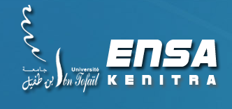

L'École Nationale des Sciences Appliquées de Kénitra (ENSAK) (en arabe : المدرسة الوطنية للعلوم التطبيقية القنيطرة) est une grande école d’ingénieurs marocaine créée en 2008 par un partenariat entre l'Université Ibn-Tofail (جامعة ابن طفيل) et l’Institut national des sciences appliquées de Lyon. C’est un établissement public, formant des ingénieurs d’État généralistes avec des spécialisations en : génie des systèmes de télécommunication et réseaux, génie informatique, génie électrique, génie industriel, génie mécatronique d'automobile.